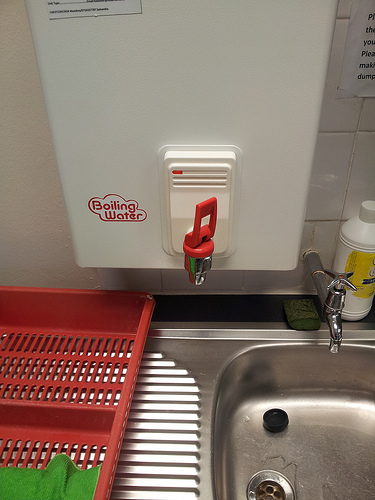

UX Training
16th to 17th August 2012
@Mount Nelson Hotel
Motivation
for attending the training
To understand what UX is
User Experience Design(UXD) is a broad term used to refer to the application of user-centered design practices to generate cohesive, predictive and desirable designs based on holistic consideration of users’ experience.
~ Wikipedia
To bridge the gap between development and user centred design.
Design is not just what it looks like and feels like. Design is how it works.
~ Steve Jobs
To form a basis for how UX may be applied to Learning Environments.
UX is
Functionality
Does it work and does it meet the business requirements?
UX is
Reliability
Does it remain operational over time?
Usability is
Learnability
- Easy to discover how it works
- Easy to remember how it works
UX is
Proficiency
Once users have learned the design how quickly can they perform tasks?
UX is
Creativity
Is it delightful to look at?
How is UX Applicable to Learning Environments?
Usability
- If an LMS is difficult to use, users get frustrated and therefore they do not get the best value out of it.
- A pleasant User Experience yields loyalty. This is particularly useful for new innovative Learning Technologies.
- LMS tools tend to be bland and boring, make the User Experience delightful and intuitive.
Usability Testing
Allows us to improve usability.
- This involves testing about 5 users and revising the design between each tested user.
- Before implementing a new design the old design must be tested to establish the good parts.
- Make paper prototypes.
- Observe the users as they test prototypes and ask them to think aloud as they do so.
- Record everything.
- Re-assure the user that it is the software being tested and not them.
- Once you decide on and implement the final design, test it again.
Mobile
- No denying the growth of the mobile market.
- Responsive Design or Native Apps?
UX in our everday lives ...
Does UX only apply to web content?
Short answer ...
NO.
UX can be applied to our everyday lives...

Credits
- @FlowInteractive
- Hakim El Hattab / @hakimel - super dupa code writer!
- http://www.useit.com/alertbox/20030825.html